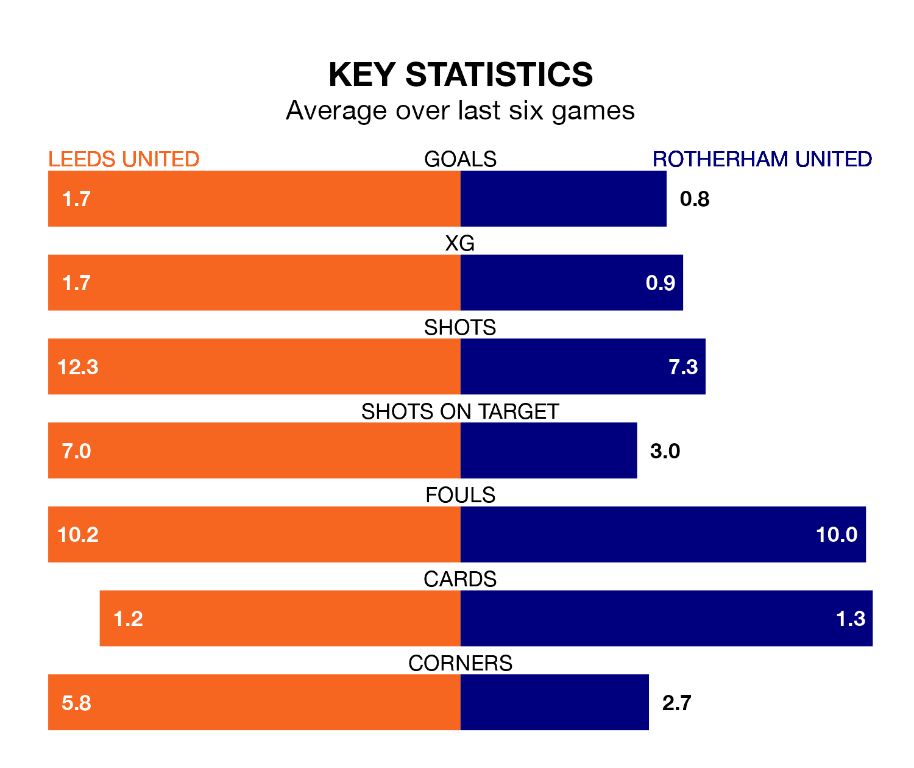

Mid-season relegation candidates Rotherham United face a challenge away against high-flying Leeds United at Elland Road on Saturday.
Rotherham United are rooted to the bottom of the EFL Championship table, and have picked up three wins and 10 draws in their 29 games to date.
Leeds, meanwhile, are third in the standings with 60 points, having won 18 and drawn six of their first 30 matches, and are 12 points behind table-toppers Leicester City.
With 25 goals in 29 games so far this season, Rotherham are the league's second-lowest scorers with 0.9 goals per game. And they are conceding more than average, letting in 54 goals at a rate of 1.9 per game.
Leeds, meanwhile, are above average scorers, with 1.7 goals per game, compared to a league average of 1.4. They have conceded 0.9 goals per game.
With Illan Meslier between the sticks, Leeds United can rely on one of the league's safest pair of hands. He has kept 11 clean sheets in his 28 appearances this season, and only one other 'keeper – West Bromwich Albion's Alex Palmer – has been able to prevent the opposition scoring on more occasions in EFL Championship.
In Rotherham United's net, Viktor Johansson has three clean sheets in 29 games. He has conceded a goal every 56 minutes, more than twice as often as the 118 minutes between goals for Meslier.
In the last 10 years, Leeds and Rotherham have played each other on 10 occasions. Leeds won five of them, Rotherham three, and they drew twice.
On average, Leeds scored 1.4 goals and the Millers 0.8 in those matches.
Their last meeting was on November 24, when they played out a 1-1 draw.
The hosts are in fantastic form in EFL Championship, with five wins and one loss from their last six games.
With a win and three draws over that period, the Millers' form is much worse – they have taken six points from 18, compared to Leeds's 15.
Leeds's last match was on February 2, a 1-0 win against Bristol City, with Wilfried Gnonto getting the goal for Leeds.
Rotherham lost 2-0 against Southampton last time out, on February 3.
Updated: 14:59 (UTC), 05/02/24